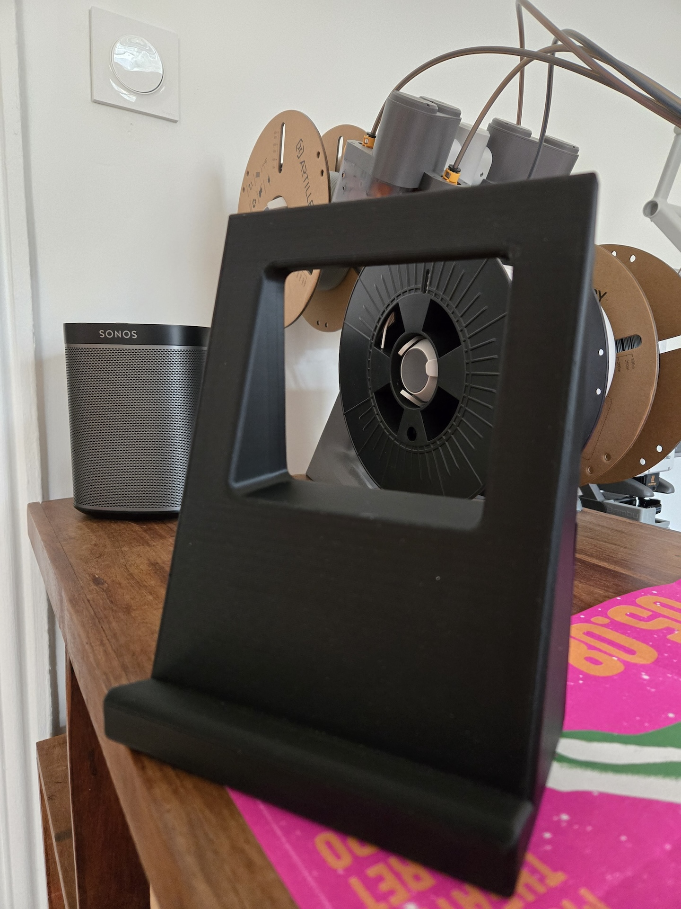
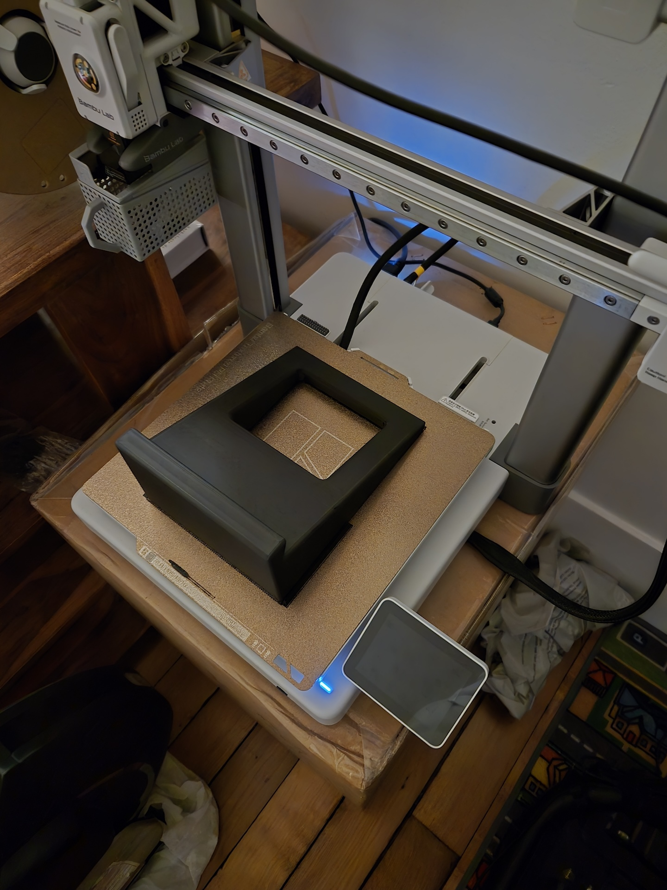
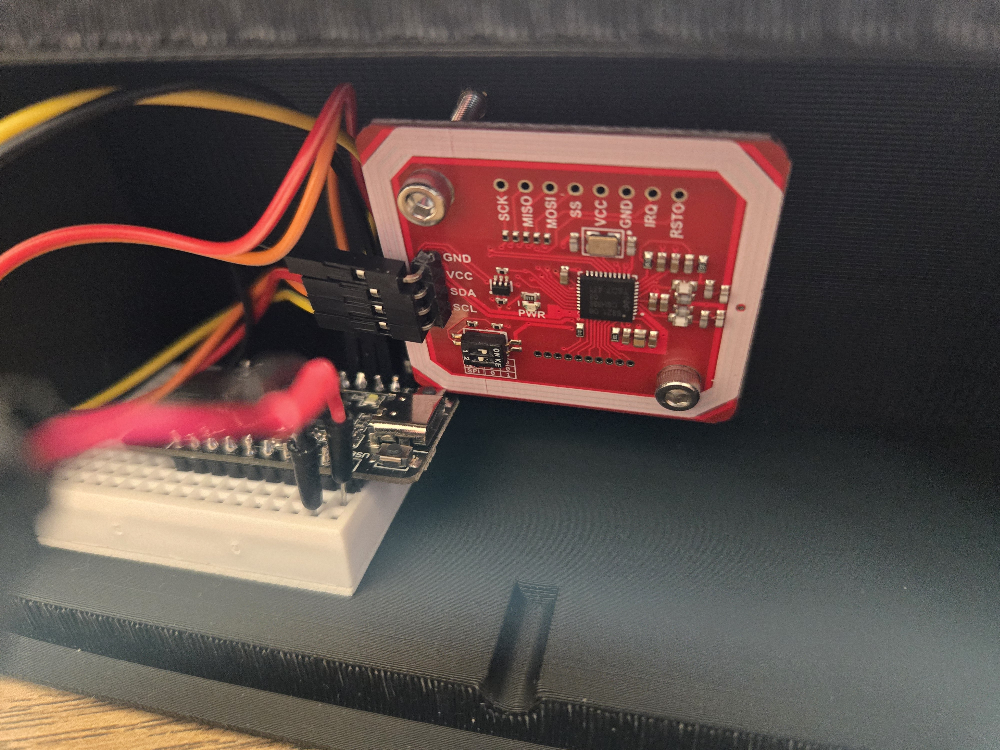
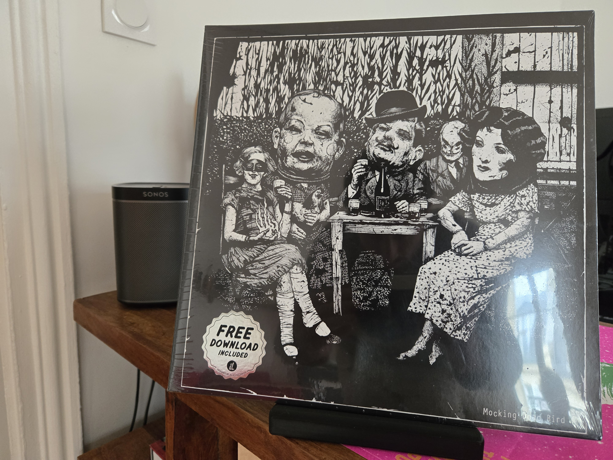

Vinyl stand
2025
An alternative vinyl experience built around album covers and the action of choosing and placing the record to listen to it. The album sleeve triggers playback through NFC. No turntable means no risk of damaging the stylus or vinyl records from vibrations I have in my flat #subway.
I couldn't redo my entire sound system but still wanted the physical feel and movements of playing music that vinyl offers. I can pretend buying vinyls now.
Features
- 3D printed vinyl records display stand
- NFC tag triggers playback on Sonos speakers
- Plays the selected album from a streaming service in HD
- Flushes the queue and plays tracklist, stops when the record is removed
- Preserves the existing sound system, avoiding turntable vibration
- Friends' wow effect (I wish)
Project photos




Tech stack
Results
The system is used daily at home. At least 10 vinyl records have been bought since.